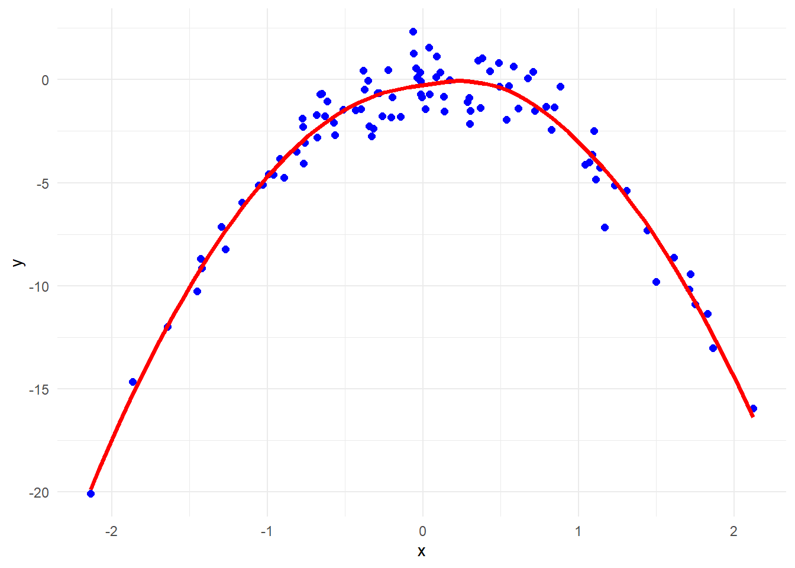

DATA 627 - Statistical Machine Learning, Fall 2025
Author
Ana Paula Miranda
Published
October 8, 2025
1 Predicting a Grade
Do by hand. A student wants to predict their final grade for the Statistical Machine Learning course using the KNN algorithm with \(K = 3\). Seven friends who took the course last year had the following mid-term test scores and grades.
Please find the results for problem 1 on the attached pdf file.
2 Cross-Validation on Simulated Data
(Pages 222-3, chap. 5, #8)
a. Generate a simulated data set as follows:
set.seed(14); x <- rnorm (100); y <- x - 4*x^2 + rnorm(100);
suppressMessages(library(tidyverse))library(ggplot2)library(boot)set.seed(14)x <-rnorm(100)y <- x -4*x^2+rnorm(100)my_data <-data.frame(x,y)glimpse(my_data)
Write out the model used to generate the data in equation form.
The equation is:
\[ y = x -4x^2 + \epsilon\]
Where:
\(x \approx N(0, 1)\)
\(\epsilon \approx N(0, 1)\), the random error.
Plot the data and interpret the plot.
ggplot(my_data, aes(x = x, y = y)) +geom_point(color ="blue", size =2) +geom_smooth(se =FALSE, color ="red", size =1.3) +theme_minimal()

Interpretation of the Plot:
The scatterplot shows a parabolic (inverted U-shaped) relationship between x and y, which was expected since \(x^2\) is negative, and the overall nonlinear pattern is clearly visible.
Compute the adjusted LOOCV estimates of prediction error that result from fitting each of the following four regression models:
\[
\begin{align}
Y &= \beta_0 + \beta_1 X + \epsilon \\
Y &= \beta_0 + \beta_1 X + \beta_2 X^2 + \epsilon \\
Y &= \beta_0 + \beta_1 X + \beta_2 X^2 + \beta_3 X^3 +\epsilon \\
Y &= \beta_0 + \beta_1 X + \beta_2 X^2 + \beta_3 X^3 + \beta_4 X^4 + \epsilon
\end{align}
\]
You can use the following data frame or use the I() function in the general linear model function formula.
# Model 1: Linearmodel1 <-glm(y ~ x, data = my_data)cv1 <-cv.glm(my_data, model1)cv1$delta
[1] 18.84759 18.83969
# Model 2: Quadraticmodel2 <-glm(y ~poly(x, 2), data = my_data)cv2 <-cv.glm(my_data, model2)cv2$delta
[1] 1.027414 1.027184
# Model 3: Cubicmodel3 <-glm(y ~poly(x, 3), data = my_data)cv3 <-cv.glm(my_data, model3)cv3$delta
[1] 1.043415 1.043088
# Model 4: 4th degree polynomialmodel4 <-glm(y ~poly(x, 4), data = my_data)cv4 <-cv.glm(my_data, model4)cv4$delta
[1] 1.064916 1.064446
Which of these models have the smallest adjusted prediction mean squared error as estimated by LOOCV? Is this what you expected? Explain your answer.
Interpretation:
The quadratic model is has best fitting based on LOOCV, which matches the true nature of the data used to simulate the data.
Model 1 (Linear) performs poorly — LOOCV error is the highest. It misses the bell shpe in the data.
Model 2 (Quadratic) fits the best — lowest LOOCV error — agreeing with the true data structure.
Models 3 and 4 do not significantly improve the prediction error and might slightly overfit, as seen in slightly higher prediction errors.
Use one call to anova() to compare all four models using the proper test= value and interpret the results in terms of the \(p\)-value.
aout <-anova(model1, model2, model3, model4, test ="Chisq")aout
Analysis of Deviance Table
Model 1: y ~ x
Model 2: y ~ poly(x, 2)
Model 3: y ~ poly(x, 3)
Model 4: y ~ poly(x, 4)
Resid. Df Resid. Dev Df Deviance Pr(>Chi)
1 98 1731.00
2 97 98.24 1 1632.76 <2e-16 ***
3 96 98.13 1 0.11 0.7482
4 95 98.03 1 0.10 0.7538
---
Signif. codes: 0 '***' 0.001 '**' 0.01 '*' 0.05 '.' 0.1 ' ' 1
Interpretation:
Model 1 to Model 2: p-value < 2e-16, meaning that adding the quadratic term \(x^2\) significantly improves the model.
Model 2 to Model 3: p-value = 0.7482, meaning that Adding the cubic term \(x^3\) does not significantly improved the model.
Model 3 to Model 4: p-value = 0.7538, meaning that adding the fourth degree polinomial term \(x^4\) does not significantly improved the model.
In conclusion, the quadratic model is the best fitting model. This also matches our earlier LOOCV findings.
Repeat step b but with \(K=10\)-Fold validation and compare the prediction mean squared error. What do you notice compared to LOOCV?
Use a seed of 14 where appropriate.
# Model 1: Linearset.seed(14)cv1_10 <-cv.glm(my_data, model1, K =10)cv1_10$delta
[1] 18.28299 18.23078
# Model 2: Quadraticset.seed(14)cv2_10 <-cv.glm(my_data, model2, K =10)cv2_10$delta
[1] 1.034309 1.031550
# Model 3: Cubicset.seed(14)cv3_10 <-cv.glm(my_data, model3, K =10)cv3_10$delta
[1] 1.066073 1.061214
# Model 4: 4th degree polynomialset.seed(14)cv4_10 <-cv.glm(my_data, model4, K =10)cv4_10$delta
[1] 1.077185 1.071651
Model 2 is still the best fitting model here with the smallest prediction error, as expected, but it’s actually larger than with LOOCV.
The error for model 1 is slightly smaller then that of LOOCV.
However, the errors for Models 2, 3 and 4 are larger than with LOOCV.
3 Predicting Defaults on Loans
(Pages 220-221, chap. 5, #5)
Load the ’Default” data set from the {ISLR2} package.
Rows: 10,000
Columns: 4
$ default <fct> No, No, No, No, No, No, No, No, No, No, No, No, No, No, No, No…
$ student <fct> No, Yes, No, No, No, Yes, No, Yes, No, No, Yes, Yes, No, No, N…
$ balance <dbl> 729.5265, 817.1804, 1073.5492, 529.2506, 785.6559, 919.5885, 8…
$ income <dbl> 44361.625, 12106.135, 31767.139, 35704.494, 38463.496, 7491.55…
Use logistic regression to create a full model for predicting the probability of default based on predictors income, balance, and student.
lr_fit <-glm(default ~ income + balance + student, family = binomial, data = Default)summary(lr_fit)
Call:
glm(formula = default ~ income + balance + student, family = binomial,
data = Default)
Coefficients:
Estimate Std. Error z value Pr(>|z|)
(Intercept) -1.087e+01 4.923e-01 -22.080 < 2e-16 ***
income 3.033e-06 8.203e-06 0.370 0.71152
balance 5.737e-03 2.319e-04 24.738 < 2e-16 ***
studentYes -6.468e-01 2.363e-01 -2.738 0.00619 **
---
Signif. codes: 0 '***' 0.001 '**' 0.01 '*' 0.05 '.' 0.1 ' ' 1
(Dispersion parameter for binomial family taken to be 1)
Null deviance: 2920.6 on 9999 degrees of freedom
Residual deviance: 1571.5 on 9996 degrees of freedom
AIC: 1579.5
Number of Fisher Scoring iterations: 8
The predictors balance and the dummy variables for student status are statistically significant at 0.05 level, meaning that they are associated with the probability of default variable. However, income is not statistically significant in this model.
Use each of the following methods to estimate the prediction error rate of the full model and then the prediction error rate of a reduced model without student.
The validation set approach. Use a 60% split for training data, a seed of 123, and a threshold of .5 where appropriate.
With student:
set.seed(123)training_pct <-0.6n <-nrow(Default)Z <-sample(1:n, floor(n*training_pct))dep_train <- Default[Z,]dep_test <- Default[-Z,]lr_fit_train <-glm(default ~ income + balance + student, family = binomial, data = dep_train)Probs_test <-predict(object = lr_fit_train, newdata = dep_test, type ="response")YesPredict <-1* (Probs_test >=0.5)table(YesPredict)
Leave-one-out cross-validation. Use a seed of 123 and a threshold of .5 for the loss function.
With 10,000 observations this will run for a while (mine took 5.9 minutes). Suggest including a chunk option for cache, e.g., #| cache: true, so it will save the results and won’t run as long when you render.
L <-function(Y, p) {mean(1* (Y ==1& p <=0.5) | (1* (Y ==0& p >0.5)),na.rm =TRUE)}
With student:
log_reg_loocv_1 <-glm(default ~ income + balance + student, family = binomial, data = Default)set.seed(123)cv_out_1 <-cv.glm(Default, log_reg_loocv_1, cost = L)cv_out_1$delta
[1] 0.02680000 0.02680031
Without student:
log_reg_loocv_2 <-glm(default ~ income + balance, family = binomial, data = Default)set.seed(123)cv_out_2 <-cv.glm(Default, log_reg_loocv_2, cost = L)cv_out_2$delta
[1] 0.02630000 0.02630133
\(K\)-fold cross-validation for \(K = 10\) and \(K = 100\). Use a seed of 123, and the same loss function with a threshold of .5 where appropriate.
With student:
set.seed(123)cv_out_10_s <-cv.glm(Default, log_reg_loocv_1, cost = L, K =10)cv_out_10_s$delta
[1] 0.0268 0.0269
set.seed(123)cv_out_100_s <-cv.glm(Default, log_reg_loocv_1, cost = L, K =100)cv_out_100_s$delta
[1] 0.026800 0.026834
Without student:
set.seed(123)cv_out_10 <-cv.glm(Default, log_reg_loocv_2, cost = L, K =10)cv_out_10$delta
[1] 0.02610 0.02615
set.seed(123)cv_out_100 <-cv.glm(Default, log_reg_loocv_2, cost = L, K =100)cv_out_100$delta
[1] 0.026300 0.026341
Summarize the results.
Compare the validation set models without and with student using anova() with the appropriate test=.
aout <-anova(lr_fit_train_r, lr_fit_train, test ="Chisq")aout
Analysis of Deviance Table
Model 1: default ~ income + balance
Model 2: default ~ income + balance + student
Resid. Df Resid. Dev Df Deviance Pr(>Chi)
1 5997 929.75
2 5996 926.42 1 3.3223 0.06835 .
---
Signif. codes: 0 '***' 0.001 '**' 0.01 '*' 0.05 '.' 0.1 ' ' 1
The p-value = 0.068 is statistically significant at 0.1 level. That actually suggests that the reduced model performs better than the full model.
Interpret the results of the different methods/models and the anova test and recommend the better model.
Find below the summary for the prediction error rates for each model tested:
Validation set method, with student: 0.0265
Validation set method, without student: 0.02625
Model LOOCV, with student: 0.02680000
Model LOOCV, without student: 0.02630000
Model LOOCV with k = 10, with student: 0.0268
Model LOOCV with k = 100, with student: 0.026800
Model LOOCV with k = 10, without student: 0.02610
Model LOOCV with k = 100, without student: 0.026300
The model with the smallest prediction error rate: 0.02610, seems to be the LOOCV with K = 10 and without student.